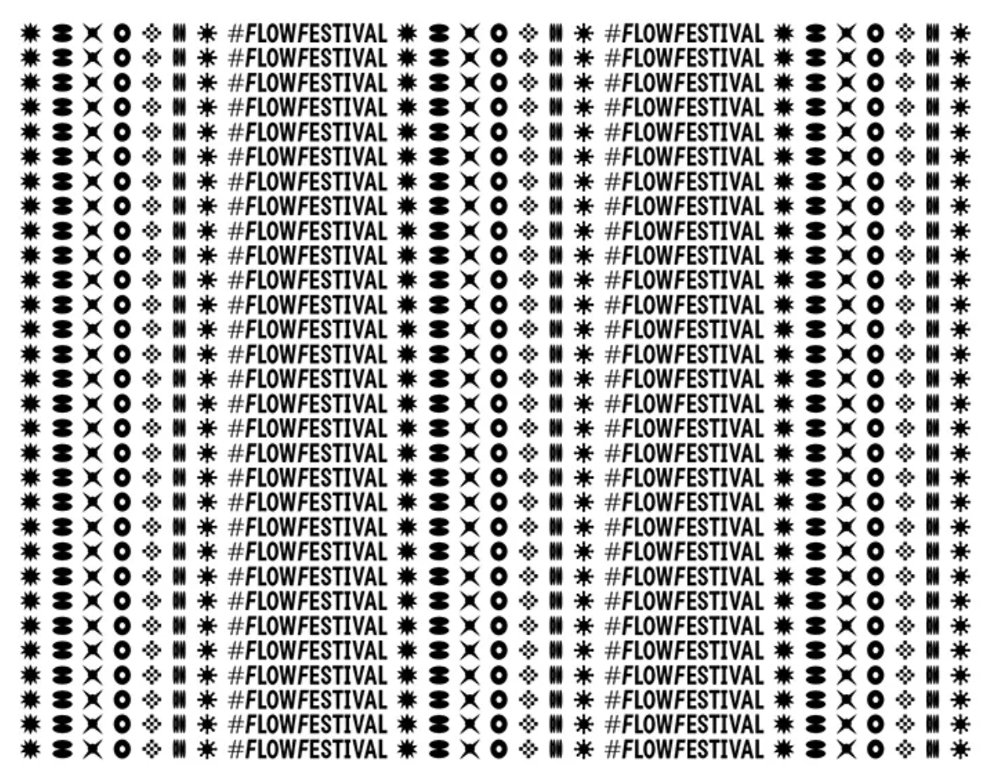
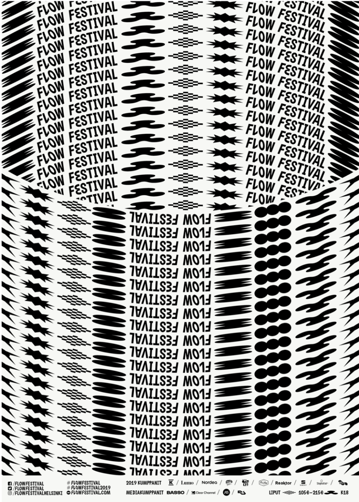

Nous avons vu que la typographie a pris un tournant majeur dans l’histoire et, par exemple, qu’elle est passée d’un rôle de support et de soutien dans les problématiques d’identités visuelles, à un rôle premier, un pilier. La création de polices de caractères typographiques sur mesure a vu son nombre de commandes se multiplier considérablement depuis l’avènement de logiciels numériques dédiés comme Glyphs ou FontLab (ainsi que d’autres outils créatifs sur lesquels nous reviendrons). Ces caractères sur mesure sont certes créés et pensés pour avoir un jeu de caractères complet, mais ils sont aussi la plupart du temps autosuffisants dans la communication de l’entité qu’elle sert.
Nous pouvons prendre quelques exemples de cette nouvelle création typographique au service d’identités visuelles, dans l’ouvrage Type for Type, paru aux éditions CounterPrint en 2021, qui retrace quelques projets aux problématiques d’identités visuelles particulières et résolu grâce à des polices de caractère display. Pour premier exemple, intéressons-nous à l’identité visuelle du Flow Festival créée par le studio Tsto. Flow Festival est un festival de musique qui prend place tous les ans à Helsinki. Il est l’un, si ce n’est le plus gros festival de musique des pays nordiques, une identité expressive mais néanmoins claire et informative était donc de mise. Le but du studio était de créer un système graphique autonome et reconnaissable au premier coup d’œil, la solution typographique s’était imposée naturellement. Cette fonte avec quelques glyphes changeant, donnent le rythme ainsi que des anomalies significatives sur certaines lettres. Liée à ce système de répétition et de couleurs dans l’identité globale, elle en fait un caractère qui remplit sa fonction autonome.
Pour deuxième exemple, prenons le cas du Gravient, un caractère créé et pensé pour la compagnie de réalité virtuelle augmentée du même nom, par le studio Pràctica, en collaboration avec le motion design David Galar. Gravient a la particularité de fonctionner selon le point de vue que l’on a sur le texte. Par un système créatif d’extrusion 3D (variable). Construite à partir d’une typographie du nom de « Gravient », une linéale standard, ils ont développé un comportement typographique utilisant l’interaction et la tridimensionnalité. Les lettres sont configurées pour changer en fonction de l’angle sous lequel elles sont regardées, de cette façon, le point de vue de l’utilisateur devient essentiel pour déterminer la forme de la typographie. Suivant cette approche, le langage typographique devient infini et les différents styles de la famille sont déterminés par l’utilisation de la perspective. Ce concept typographique a été conçu en premier lieu pour la réalité virtuelle et augmentée ainsi que l’interaction sur le site Web.
La typographie cinétique (en mouvement), dérivé de kinetic type est un autre moyen d’aborder la typographie ornementale. En effet, la typographie cinétique a autant, si ce n’est plus, d’impact que les caractères ornementaux pouvant identifier une marque. C’est ici le pure produit d’une tendance, liée à une certaine avancée technologique, mais ça n’en est pas moins intéressant de l’explorer.
Prenons l’exemple de Squarespace, une plateforme de formation en ligne sur les métiers de l’image et du multimédia, qui a demandé au studio DIA de faire leur identité visuelle en utilisant les principes de typographie cinétique pour montrer un des points abordables dans les formations proposées. En utilisant le caractère Clarkson Medium, une linéale des plus communes, ils ont donné à la police une dimension fraîche et attrayante via un grand nombre d’animations typographiques. Diffusée principalement sur écran, cette dynamique et ce rythme constituent à eux seuls une forte expression et caractérisent la plateforme, faisant marque avec leur identité. [a]Squarespace a pu « surfer sur la tendance » et se faire connaître auprès d’un nouveau public, envieux d’apprendre. Le succès qu’a gagné Squarespace peut se vérifier aux vues des nombreuses nouvelles formations dispensées par des particuliers sur la plateforme, et ce dans beaucoup de champs (Design, Photographie, Animation).
Ces exemples montrent, d’après moi, que d’une certaine manière la typographie est certe un terrain d’expérimentation et une matière riche à exploiter, mais aussi un enjeux professionnel qui peut se suffir à elle-même pour résoudre, dépendamment de son contexte, des problèmes d’identités visuelles.
→ PARTIE 3